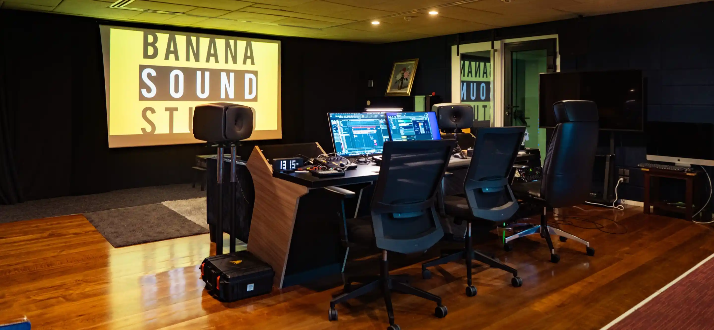

หลายคนนึกถึงดนตรีประกอบภาพยนตร์ว่าเป็นช่วงท้ายของงานสร้าง ภาพตัดเสร็จแล้วจึงค่อยใส่เพลง แต่ในการทำงานจริง ดนตรีที่ดีมักเริ่มก่อนนั้นมาก มันเริ่มตั้งแต่วันที่ทีมสร้างเล่าเรื่องให้เราฟัง และเราเริ่มถามว่าเรื่องนี้อยากให้คนดูรู้สึกอย่างไรเมื่อเดินออกจากโรง

Banana Sound Studio ก่อตั้งขึ้นในปี 2003 โดยคุณเทิดศักดิ์ จันทร์ปาน นักแต่งดนตรีประกอบภาพยนตร์ ตลอดกว่า 20 ปีที่ทำงานกับภาพยนตร์ ซีรีส์ และงานโฆษณา เราพบว่าขั้นตอนที่ช่วยให้งานสกอร์ออกมาดีที่สุด มักไม่ใช่เรื่องเทคนิค แต่เป็นการเข้าใจโจทย์ให้ตรงกันตั้งแต่ต้น บทความนี้จึงอยากเล่าภาพรวมของขั้นตอนเหล่านั้นแบบเข้าใจง่าย
1. อ่านเรื่อง ก่อนฟังเพลง
จุดเริ่มต้นของงานคือบทและภาพ ไม่ใช่เพลงอ้างอิง นักแต่งเพลงต้องเข้าใจว่าเรื่องกำลังพูดถึงอะไร ตัวละครแต่ละคนต้องการอะไร และจุดเปลี่ยนสำคัญของเรื่องอยู่ตรงไหน ดนตรีที่ไพเราะแต่ไม่ได้รับใช้เรื่อง อาจทำให้ฉากดูสวยขึ้น แต่ไม่ได้ทำให้คนดูรู้สึกมากขึ้น
คำถามที่เรามักชวนผู้กำกับคุยคือ อยากให้คนดูรู้ก่อนตัวละครหรือรู้พร้อมกัน อยากให้ฉากนี้อึดอัด อบอุ่น หรือปล่อยให้เงียบ คำตอบเหล่านี้กำหนดทิศทางของดนตรีได้ชัดกว่าการบอกชื่อแนวเพลงเสียอีก
2. Spotting: ตกลงกันว่าดนตรีเข้าและออกตรงไหน
เมื่อมีภาพตัดต่อในระดับที่ดูเรื่องได้ต่อเนื่องแล้ว ทีมจะนั่งดูด้วยกันทีละฉาก เพื่อกำหนดว่าดนตรีควรเริ่มที่วินาทีไหน จบตรงไหน และทำหน้าที่อะไร ขั้นตอนนี้เรียกว่า spotting ผลลัพธ์คือรายการคิว (cue) ที่ระบุเวลา อารมณ์ และหมายเหตุของแต่ละช่วง
สิ่งที่หลายคนไม่คาดคิดคือ การเลือกว่าจะไม่ใส่ดนตรีตรงไหน สำคัญพอ ๆ กับการเลือกว่าจะใส่ ความเงียบหรือเสียงบรรยากาศเพียงอย่างเดียว บางครั้งทำให้ฉากหนักแน่นกว่าดนตรีเต็มวง
3. Temp track ใช้เป็นภาษากลาง ไม่ใช่แม่แบบ
ระหว่างตัดต่อ ทีมมักใส่เพลงชั่วคราว (temp track) เพื่อช่วยให้จังหวะภาพลงตัว เพลงเหล่านี้มีประโยชน์มากในฐานะภาษากลาง เพราะช่วยให้เราเข้าใจว่าผู้กำกับชอบพลังงาน ความเร็ว หรือสีเสียงแบบไหน
แต่เป้าหมายของเราไม่ใช่การเลียนแบบ temp track เราพยายามแยกให้ได้ว่า อะไรในเพลงชั่วคราวที่ทำงานกับฉาก เช่น จังหวะที่ค่อย ๆ เร่ง หรือเสียงต่ำที่สร้างความกดดัน แล้วสร้างสิ่งนั้นขึ้นใหม่ในภาษาดนตรีของเรื่องนี้เอง
4. สร้างธีม ให้ดนตรีมีความทรงจำ
ธีมคือท่วงทำนองหรือรูปแบบเสียงที่ผูกกับตัวละคร สถานที่ หรือความสัมพันธ์ เมื่อธีมกลับมาในบริบทใหม่ เช่น จากเปียโนเบา ๆ กลายเป็นวงเครื่องสายเต็มกำลัง คนดูจะรู้สึกถึงการเดินทางของเรื่องโดยไม่ต้องมีใครอธิบาย
ในงานซีรีส์ที่มีหลายตอน ธีมยิ่งสำคัญ เพราะช่วยให้คนดูจำโลกของเรื่องได้ และช่วยให้ทีมผลิตดนตรีได้ต่อเนื่องในเวลาที่จำกัด
5. เดโม ฟังร่วมกัน และปรับตามภาพที่เปลี่ยน
หลังจากวางทิศทางแล้ว นักแต่งเพลงจะทำเดโมของคิวสำคัญให้ทีมฟังกับภาพ การฟังกับภาพจริงต่างจากการฟังเพลงเดี่ยว ๆ มาก บางท่อนที่ฟังแยกแล้วดูเรียบ กลับทำงานได้ดีที่สุดเมื่อวางคู่กับภาพ
ภาพตัดต่อมักเปลี่ยนจนถึงช่วงท้าย ดนตรีจึงต้องยืดหยุ่น ทีมของเราจัดการเวอร์ชันของภาพและคิวอย่างเป็นระบบ เพื่อให้แก้ไขได้เร็วโดยไม่เสียโครงสร้างของเพลง
6. อัด มิกซ์ และส่งต่อให้งานเสียงทั้งเรื่อง
เมื่อคิวได้รับการยืนยัน จึงเข้าสู่การอัดเครื่องดนตรีจริงหรือเก็บรายละเอียดเสียง แล้วมิกซ์ให้พร้อมสำหรับระบบเสียงที่ใช้ฉาย สตูดิโอของเรามีห้องที่รองรับงานสเตอริโอ 5.1, 7.1 และงานเสียงแบบ Immersive เพื่อให้ดนตรีอยู่ร่วมกับเสียงพูดและเสียงเอฟเฟกต์ได้อย่างสมดุล
ดนตรีประกอบที่ดีไม่จำเป็นต้องดังที่สุดในฉาก แต่ต้องอยู่ในตำแหน่งที่ถูกต้อง ให้คนดูรู้สึกโดยไม่ทันสังเกตว่ากำลังถูกพาไป
ถ้าคุณกำลังเริ่มโปรเจกต์
สิ่งที่ช่วยทีมดนตรีได้มากที่สุดคือบทหรือเรื่องย่อ ภาพตัดต่อล่าสุด ไทม์ไลน์ของงาน และตัวอย่างเพลงที่ชอบหรือไม่ชอบพร้อมเหตุผลสั้น ๆ ไม่จำเป็นต้องใช้ศัพท์ดนตรีเลย การเล่าความรู้สึกที่อยากได้ด้วยภาษาธรรมดาก็เพียงพอให้เราเริ่มต้นได้
หากอยากคุยเรื่องดนตรีประกอบภาพยนตร์ ซีรีส์ หรือโฆษณา ส่งรายละเอียดมาที่ทีมได้เลย เรายินดีรับฟังตั้งแต่วันที่เรื่องยังเป็นแค่ไอเดีย
Summary (English)
A score begins long before recording: with the script, a spotting session to decide where music enters and leaves, temp-track conversations, themes for characters, and a review loop that stays in sync with picture edits. Good communication between director, editor and composer matters as much as the notes themselves.
The full article is currently available in Thai — switch to TH to read it.